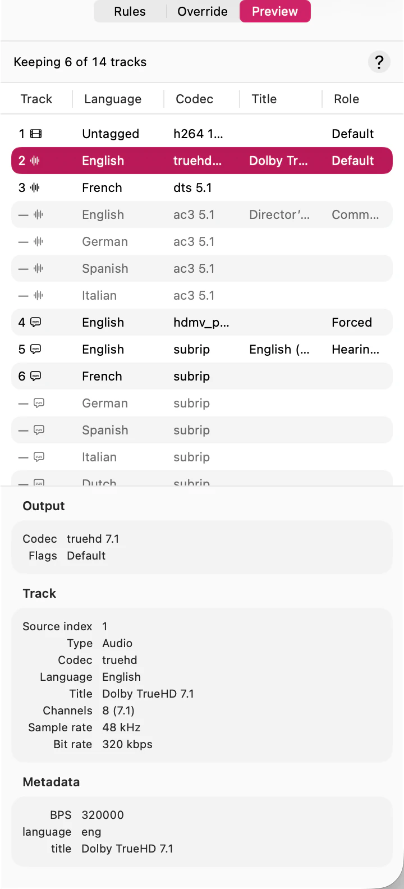

Bevor du eine Warteschlange mit deinen Regeln losschickst, lohnt es sich zu sehen, was bei einer einzelnen Datei herauskommt. Das zeigt der Tab Vorschau: alle Spuren, die der Durchlauf schreibt, in der Reihenfolge der Ausgabe – und alle Spuren, die er weglässt.

Abgeblendete Zeilen und Zeilen mit einem Strich anstelle einer Nummer sind Spuren, die entfallen – sie werden aufgeführt, damit du siehst, was du verlierst, nicht weil sie in der Datei landen.
Hier lässt sich nichts ändern. Die Vorschau ist das Ergebnis deiner Regeln und einer eventuell gesetzten Anpassung. Wie du etwas änderst, erfährst du unter Den Spurplan für eine Datei anpassen.
Spur zeigt, an welcher Stelle die Spur in der Ausgabe steht, von eins an gezählt, mit einem Symbol für ihre Art. Ein Strich bedeutet, dass sie gar nicht in der Ausgabe enthalten ist.
Codec ist das Format, in dem die Ausgabe die Spur enthält, und die Eckdaten des
Inhalts – ac3 5.1, h264 1080p. Ein Pfeil (→ aac) bedeutet,
dass die Spur umgewandelt statt kopiert wird.
Titel ist der eigene Name der Spur, sofern ihr Urheber ihr einen gegeben hat – „Audiokommentar des Regisseurs“, „Englisch (SDH)“, „Dolby TrueHD 7.1“. Daran erkennst du oft am schnellsten, welche von zwei Spuren in derselben Sprache welche ist. Bei den vielen Spuren ohne Namen bleibt das Feld leer.
Rolle sagt, wofür die Spur gedacht ist, und das entscheidet meist, ob du sie haben willst:
Die Rollen stammen aus den Tags der Datei. Eine falsch gekennzeichnete Spur zeigt daher die Bezeichnung, die sie trägt, und nicht, was sie wirklich ist. Genau dafür gibt es den Tab Anpassung.
Standard ist die einzige Rolle, die SubTrack vergibt, statt sie zu lesen. Die Reihenfolge deiner Sprachen bestimmt, mit welcher Tonspur die verschlankte Datei beginnt: Die erste Tonspur der Ausgabe wird als Standard markiert, die anderen nicht – gleichgültig, was die Quelle angab. Alle anderen Rollen werden unverändert übernommen.
Die Spalten zeigen nur, was eine Spur von der anderen unterscheidet. Wähle eine beliebige Zeile aus, und der Bereich darunter listet alles, was über diese Spur bekannt ist, in drei Gruppen:
Ziehe den Trenner, um der Liste oder den Details mehr Platz zu geben, und wähle einen beliebigen Wert aus, um ihn zu kopieren.
Liste und Details lassen sich scrollen. Ein Remux mit einem Dutzend Untertitelspuren passt nicht in einen schmalen Inspektor, ebenso wenig die Metadaten, die manche Encoder schreiben.
Wenn du eine Datei erneut analysierst (Warteschlange ▸ Auswahl erneut analysieren), weist der Tab darauf hin, solange er die Spuren neu liest. Bis dahin zeigt er weiter den alten Plan.